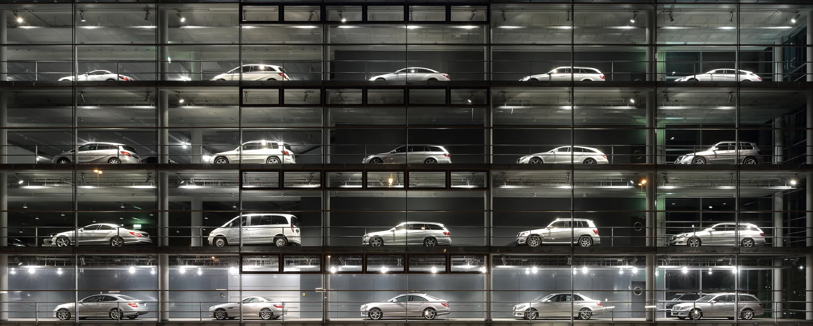

▲ "충전소가 없어져서 귀찮아졌다"는 말은 개인 취향이 아니라 인프라 통계로 설명되는 현상이다(사진은 국내 충전기)
"지금 전기차를 타고 있는데, 최근에 전기차 충전하는 곳이 없어져서 조금 귀찮아지기 시작했다." 일본 모델 야노시호가 최근 자신의 유튜브 채널에서 벤츠 매장을 찾은 이유를 이렇게 설명했다. 벤츠 SL43·S클래스·G바겐을 둘러보던 그는 "가솔린차로 바꿀까 생각하고 있다"고 덧붙였다. 흔한 연예인의 차량 시승 브이로그처럼 보이지만, 이 한 문장은 개인의 변심이 아니라 일본 전기차 시장 전체가 겪고 있는 구조적 후퇴를 정확히 짚고 있다.
1. "충전소가 사라졌다"는 말, 과장이 아니었다

▲ 전기차 충전 스트레스에 지친 소비자들이 향하는 곳은 결국 내연기관 프리미엄 브랜드 전시장이다(사진은 참고 이미지) ⓒ Wikimedia Commons
야노시호가 벤츠 매장을 찾은 계기는 명확했다. 현재 타고 있는 전기차의 충전 접근성이 나빠졌다는 것. 그는 벤츠를 선택한 이유에 대해서도 "일본에서 벤츠를 제일 많이 파는 사람이 있는데, 그 사람의 서비스와 태도가 좋아서"라고 답했다. 이날 그는 3,000만 엔(약 3억 원)대 차량과, 색상을 매트로 바꾸는 것만으로 100만 엔(약 1,000만 원)이 추가되는 옵션 가격에 놀라기도 했다. 드림카로는 페라리를 꼽았지만 "재고가 없어 오늘은 보지 못했다"고 말했다.
여기서 흥미로운 지점은 "충전소가 없어졌다"는 표현이다. 실제로 충전기 숫자가 줄어들었다기보다, 애초에 충전 인프라 확충 속도가 EV 보급을 따라가지 못하고 있다는 현실이 이런 체감으로 이어진다는 것이 업계의 대체적인 해석이다.
2. 일본 EV 시장, 숫자로 보면 더 뚜렷하다
| 지표 | 수치 |
|---|---|
| 일본 승용차 중 전기차 비중 | 약 1.6~1.7% (전년 대비 하락) |
| 2025년 1~5월 순수전기차 판매 | 약 2만 대(전년 대비 17%↓) |
| 같은 기간 PHEV 판매 | 약 1만 9,000대(전년 대비 1.8%↓) |
| 일본 전역 공공충전소 | 약 2만 5,000곳(충전기 약 5만 대) |
| 한국 공공충전기(국토면적 일본의 약 절반) | 약 35만 대 |
단순 비교하면 국토면적이 절반 수준인 한국이 일본보다 7배 가까이 많은 공공충전기를 보유한 셈이다. 하이브리드 강자 도요타의 안방이라는 점을 감안해도, 일본의 전동화 속도가 유독 더딘 이유를 이 격차만으로도 상당 부분 설명할 수 있다.
📍 왜 일본은 충전 인프라가 더디게 늘까 — 맨션이라는 구조적 장벽
일본은 도심 거주 형태의 상당수가 맨션(공동주택)이다. 맨션에 전기차 충전소를 설치하려면 입주민 관리조합의 동의가 필요한데, 소수의 전기차 소유자를 위해 공용 예산을 들여 충전 설비를 까는 데 대한 유인이 크지 않다는 것이 업계의 분석이다. 여기에 차종 자체가 적고 가격도 상대적으로 비싸다는 점까지 겹치며 악순환이 이어진다.
3. 한국은 다를까 — '불편해도 다시 산다'는 역설
흥미롭게도 한국은 비슷한 불편을 겪으면서도 다른 반응을 보인다. 국내 조사에 따르면 전기차 이용자 2명 중 1명이 충전소 이용에 불편을 느낀다고 답했지만, 그럼에도 약 70%는 다음에도 전기차를 재구매하겠다고 밝혔다. 배터리 교체 비용에 대한 우려, 겨울철 주행거리가 20~30%가량 줄어드는 현상은 국내 오너들도 똑같이 겪는 불편이지만, 인프라 절대량 자체가 일본보다 훨씬 두터운 것이 재구매 의향을 지탱하는 배경으로 꼽힌다.
✅ 같은 '충전 스트레스', 다른 결론
· 일본 — 절대적 인프라 부족(충전기 5만 대) + 맨션 중심 주거 구조 → EV 판매 자체가 뒷걸음질
· 한국 — 인프라는 상대적으로 두텁지만(35만 대) 특정 시간·장소 집중 이용에 따른 체감 불편 → 그래도 재구매 의향은 높음
· 결국 문제는 '충전기가 존재하느냐'가 아니라 '필요한 순간에 접근 가능하냐'는 밀도와 분포의 문제로 귀결됨
4. 이탈한 소비자는 어디로 가나 — 벤츠라는 선택지

▲ 벤츠 G바겐(참고사진). 충전 스트레스에서 벗어나려는 전기차 오너들에게 프리미엄 내연기관·하이브리드 브랜드는 유력한 대안이 된다 ⓒ CarBling, Wikimedia Commons
충전 스트레스로 전기차를 떠나는 소비자가 향하는 곳이 반드시 저가 내연기관차는 아니다. 오히려 이미 프리미엄 세그먼트에 익숙해진 소비자일수록, 브랜드의 서비스·경험을 다시 신뢰할 수 있는 곳으로 이동하는 경향이 있다. 야노시호가 벤츠를 택한 이유로 '판매자의 서비스와 태도'를 꼽은 것도 이런 맥락과 무관하지 않다.

▲ 벤츠 S클래스. 전동화 전환에 속도를 늦춘 소비자들에게 내연기관·하이브리드 플래그십은 여전히 유효한 선택지로 남아 있다 ⓒ Wikimedia Commons
실제로 벤츠는 SL43(1억 5,560만 원, 2.0L 터보 421마력), S클래스, G바겐 등 전동화와 무관하게 브랜드 헤리티지를 유지하는 내연기관·하이브리드 라인업을 여전히 두텁게 갖추고 있다. 완전 전동화를 서두르지 않고 두 노선을 병행하는 전략이, 이번처럼 '전기차에서 이탈하는 프리미엄 고객'을 흡수하는 통로가 되는 셈이다.
5. 요약 — 개인의 변심이 아니라 인프라의 문제
요약
"전기차 충전하는 곳이 없어져서 귀찮아졌다"는 말은 한 개인의 취향 변화가 아니라, 일본 전기차 시장 전체의 구조적 문제를 드러내는 발언이었다. 일본의 전기차 판매 비중은 1.6~1.7%대에 머물러 있고, 2025년 상반기 순수전기차 판매는 전년 대비 17% 줄었다. 공공충전소는 약 2만 5,000곳, 충전기는 약 5만 대에 그쳐, 국토면적이 절반인 한국(약 35만 대)에 크게 못 미친다.
한국도 충전 불편을 호소하는 목소리는 비슷하게 크지만, 재구매 의향은 여전히 높다는 점에서 일본과는 결이 다르다. 문제의 본질은 충전기의 존재 여부가 아니라, 필요한 순간에 얼마나 접근 가능하냐는 밀도의 문제다.
충전 스트레스로 전기차를 떠나는 소비자들은 결국 신뢰할 수 있는 서비스와 브랜드 경험을 갖춘 프리미엄 내연기관·하이브리드로 향하는 경우가 많다. 완전 전동화 대신 두 노선을 병행해 온 벤츠 같은 브랜드가 이 흐름의 수혜자가 되고 있는 것은 우연이 아니다.